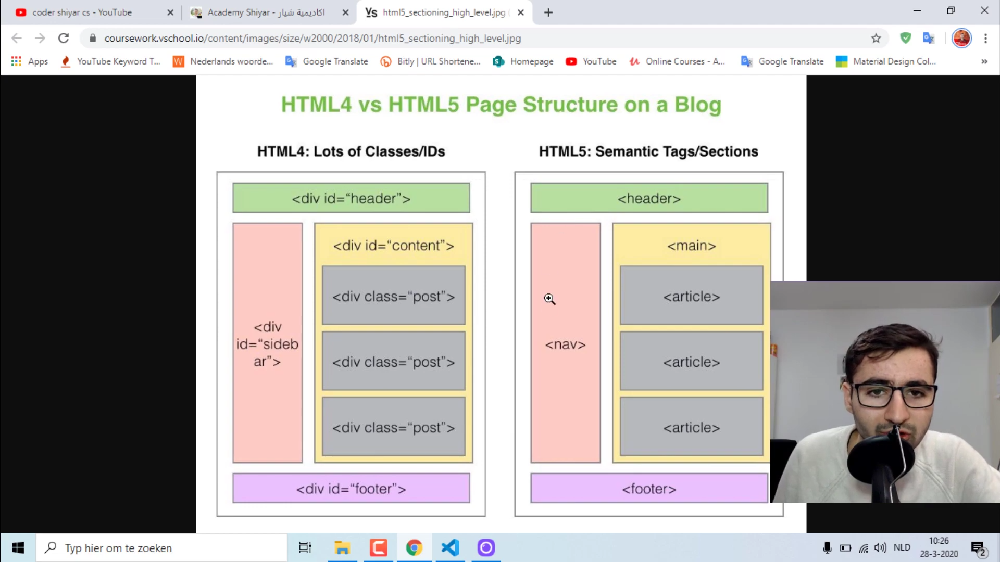

-->
من اليمين
من اليسار
Text
Text
Text
Text
Text
Text
I LOVE you
I like tolearn HTML
B
EM
I
SMALL
STRONG
INS
DEL
MARK
STRONG AND COLOR
هلو
redamad2016@gmail.com
اتصل بي


دوس عل الصورة
- Text5
- Text6
- Text7
- Text8
- Text for you
- Text for me
Text
Text
Text
Text
- Text
- Text1
Text
Text1
Text2
مستطيل فارغ :
password :
Email :
هاتف
التاريخ :
اختر لغتك
االاختيار
عرض نسبة شيء معين
افصل
بيننا
من تكتب نص هنا يحافظ
على شكلة
يعني مايدمج نفس باقي
العناصر
1-شوف
2-شلون
: الفرق بين
div VS span
Reda
Emad
Reda Emad
Reda
Reda

اسمي الاول Reda
Reda اسمي الاول
Reda اسمي Emad

هنا الدرس
هذه مشروعي
5 2
جوه فوك
فوك جوه
الفرق بين id و class
address
HTML
07823879638
07823879638
تحميل
لوضع اقتباس نصي على النص
سنتر لوضع العناصر بالمنتصف
يضيف فراغات جوه وفوك ويمين ويسار
لوضع نص قابل للتعديل
لوضع نص غير قابل للتعديل